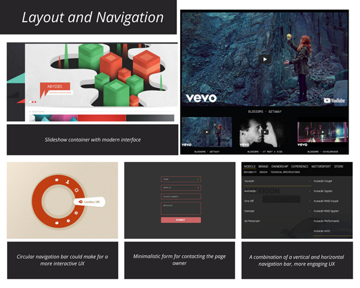
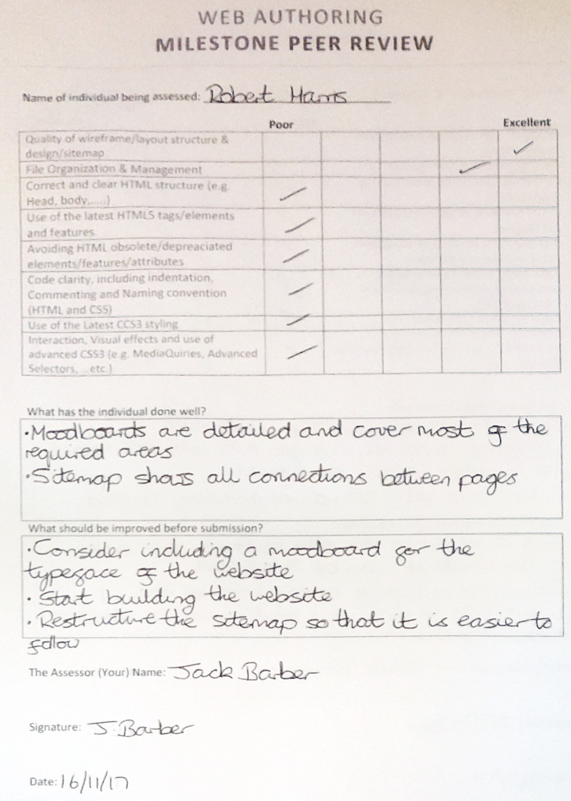
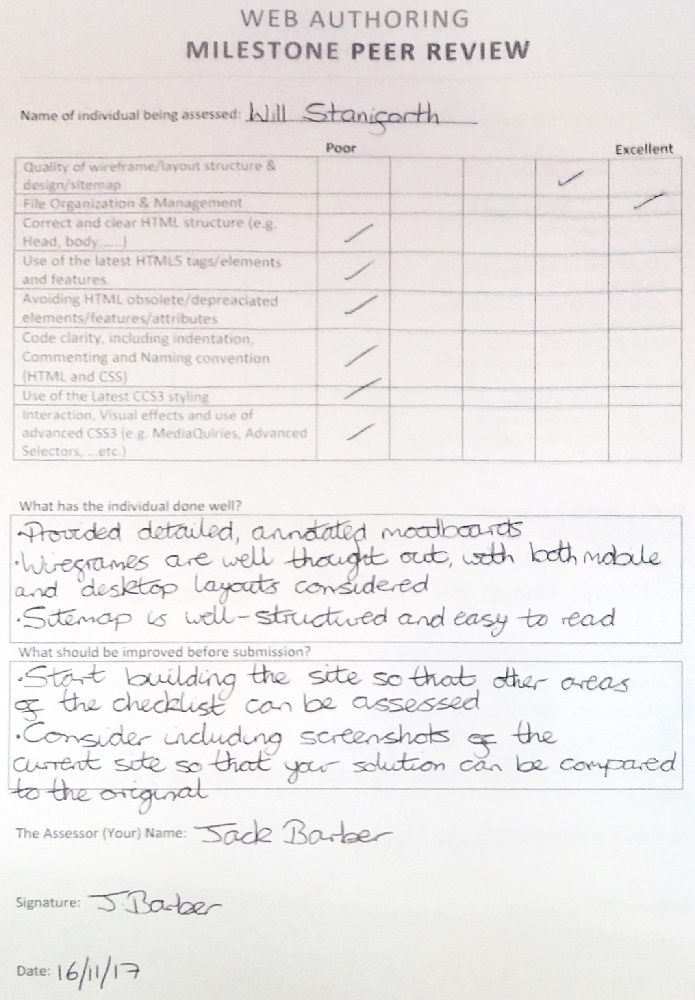

Introduction
TThe use of HTML5 and CSS3 throughout the project meant that the site can be displayed in a suitable format on all device sizes. The use of these web standards means that the site is easier to maintain, whilst providing new features such as native video and audio support, local storage, and flexible layouts. The semantic nature of HTML5 makes website development simpler as the function of all tags and attributes are such that they match their written value. For example, the figure tag inserts a figure, just as the em tag dictates that content will be emphasised. HTML5 lead to the deprecation of some tags and attributes, including i, big, and font, enforcing the idea that HTML is used exclusively to declare the content of a page, whilst CSS is for stylising content. Although the new standards have many advantages over previous versions, some of their features are no supported by all browsers (Internet Explorer 6 will ignore new HTML5 elements) There are also some inconsistencies across modern browsers, with Edge 15 lacking support for WebGL 2 and Web SQL Databases (HTML5 Test, 2017) Vendor prefixes are commonly implemented to ensure that sites have a constant appearance across all major browsers, forcing developers to be more careful with their choice of CSS. Interoperability, “the ability of computer systems or software to exchange and make use of information” (Oxford Dictionaries, 2017), is also an important part of the website. In the context of web authoring, interoperability ensures that a website is displayed correctly across a range of platforms, including different browsers and devices. This was done using media queries. Whilst media queries are useful for rearranging content when a browser is resized, they do not always work correctly. Some modern mobile devices have screen resolutions higher than older desktops and laptops - the mobile version of a site may be shown on a desktop, and the desktop version on a mobile device. JavaScript could be used to determine which operating system was being used by the device to overcome this issue.
Web Standards
The use of HTML5 and CSS3 throughout the project meant that the site can be displayed in a suitable format on all device sizes. The use of these web standards means that the site is easier to maintain, whilst providing new features such as native video and audio support, local storage, and flexible layouts. The semantic nature of HTML5 makes website development simpler as the function of all tags and attributes are such that they match their written value. For example, the figure tag inserts a figure, just as the em tag dictates that content will be emphasised. HTML5 lead to the deprecation of some tags and attributes, including i, big, and font, enforcing the idea that HTML is used exclusively to declare the content of a page, whilst CSS is for stylising content. Although the new standards have many advantages over previous versions, some of their features are no supported by all browsers. Browsers such as Internet Explorer 6 will ignore new HTML5 elements. There are also some inconsistencies across modern browsers, with Edge 15 lacking support for WebGL 2 and Web SQL Databases (HTML5 Test, 2017). Vendor prefixes commonly must be implemented in CSS3 to ensure that sites have a constant appearance across all major browsers, forcing developers to be more careful with their choice of CSS. Interoperability, “the ability of computer systems or software to exchange and make use of information” (Oxford Dictionaries, 2017), is also an important part of the website. In the context of web authoring, interoperability ensures that a website is displayed correctly across a range of platforms, including different browsers and devices. This was done using media queries.
Current Solution

The current solution lacks informative content and is badly formatted. The colour schemes used in some areas of the site clash and have a negative impact on the user experience. Whilst the UI is simple, it cannot be described as effective because the website provides minimal visual feedback to the user when elements of the page are interacted with. The site uses basic media queries, providing a burger-style menu when viewed on mobile devices. Content overflow is also poorly handled – a problem that appears throughout the site on mobile devices.
Research Boards and Mood Boards
Before designing and building a more responsive website, various research boards were developed showing examples of good and bad website designs. Mood boards exploring user interfaces, colours, and typefaces were also produced, alongside wireframes for the site.
Examples of Good Websites
Examples of Bad Websites
Aesthetics and Colours Mood Board
Layout and Navigation Mood Board

Typography Mood Board

Typography Mood Board
Desktop Site Wireframes
Mobile Site Wireframes

Customiser Wireframe
File Organisation and Site Structure
A well-structured website cache is imperative if a website is to function correctly. Knowing within which folder each file is stored makes linking CSS files and using JavaScript files simple. The site map for the project, shown in figure 2, enabled the website to be built more easily, as the structure of the site itself did not have to be considered during coding.
The following figures show how the files are structured within the site cache, with each file type stored in a different folder.
Markup, Styles, and Scripts
The responsive design of the website relies on the use of JavaScript. Whilst JavaScript is a powerful tool, using the jQuery library “simplifies a lot of the complicated things from JavaScript, like AJAX calls and DOM manipulation” (W3CSchools, 2017). jQuery was used for all JavaScript on the site except the customiser, which was written in JavaScript. Other libraries, such as slick.js and filereader.js, were used to provide functionality that would have been too time consuming to program from scratch. JavaScript provides features that enhance the UI and subsequently the UX. The DOM (Document Object Model) is required to utilise HTML elements using JavaScript and jQuery, and is described as “a platform and language-neutral interface that allows programs and scripts to dynamically access and update the content, structure, and style of a document” (W3Schools, 2017). The website developed in this assessment extensively makes use of the DOM, appearing in all JavaScript files, and making the website more interactive. One example of the DOM being required is the burger-style menu, where the DOM is used to check if the menu button has been pressed on. Elements of the page are manipulated depending on the character shown as the menu icon when it is pressed by a user.
The website produced required the use of vendor prefixes. These are required because HTML5 and CSS3 are new technologies, and not all their features are fully supported by browsers. Examples of features that may not be renderable by browsers include transformations, background gradients, and geolocation. Prefixes provide a solution to this problem, as major browsers each provide their own way of handling these new features.
Local storage was also implemented into the site, allowing the state of the customiser to be stored and redisplayed in a new session. This replaces the use of cookies, which can only store 2,000 characters at a time, sent to a server, and “transmitted with every server request” (Wayne Christian, 2017), making them inappropriate for use in this case.

Peer Reviews
 Week Eight Personal Reflection
W3C Validation
Warnings are commonly displayed where there is a section without a title. Titles were not required for most containers, so the issue was left unaddressed.
Browser Testing